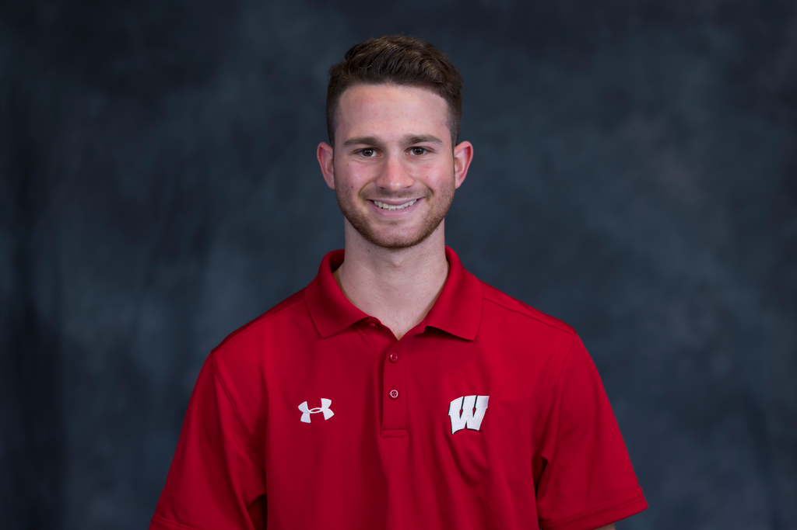

Attended The University of Madison-Wisconsin
I learned the proper approach to creating polished videos with limited crew and quick turnaround times.
I wrote, directed and filmed a one minute public service announcement and a five documentary.
I have worked with a film crew to produce five minute narrative film that I wrote and directed. I have completed a Bachelors Degree in Communication Arts: Radio, Television, and Film, and acertificate in Digital Studies at the University of Wisconsin-Madison.
I am letter-winning coxswain for Wisconsin Men’s Rowing, I has raced in three IRA National Championships. I have been able to balance 20 hrs/week of practice along with a full class load.
I plan to continue my love of film to become a producer to help people create the content they want to share with the world
Attended The University of Madison-Wisconsin

Graduating Class of 2023